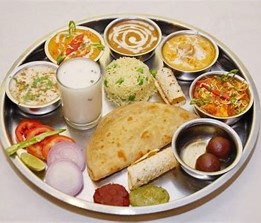
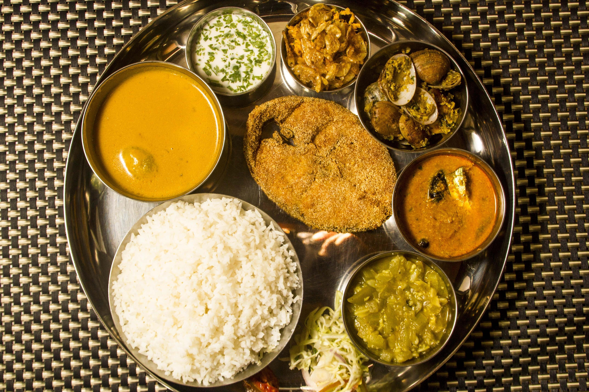
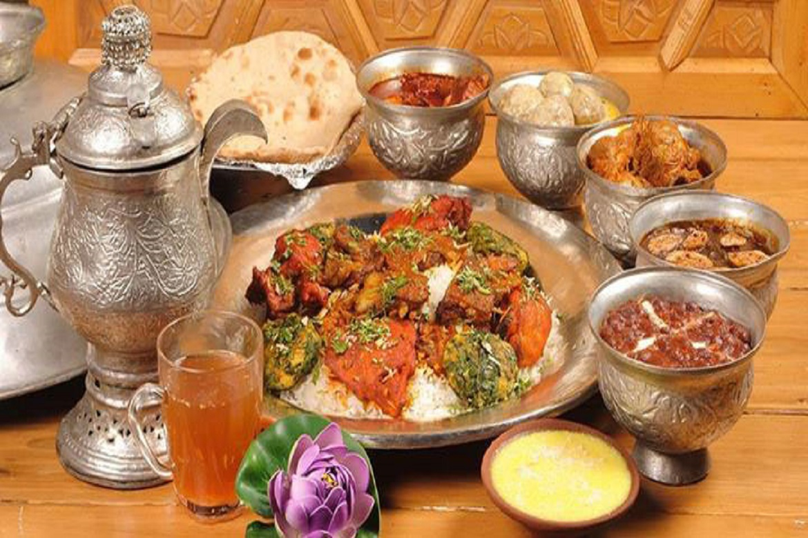
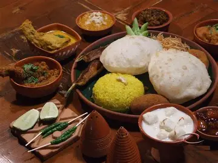

Punjabi food
Known for its bold flavors and hearty dishes, Punjabi food features buttery delights like butter chicken, sarson da saag with makki di roti, and chole bhature. Tandoori cooking is a hallmark here.
Goan food
A coastal gem blending Portuguese and Indian influences. Expect prawn balchão, vindaloo, and bebinca. Coconut, vinegar, and seafood dominate the palate.
Kashmiri food
Known for its regal Wazwan—a multi-course meal with dishes like rogan josh, yakhni, and gushtaba. Saffron and dried fruits add a luxurious touch.
Bengali food
Bengali cuisine is a rich tapestry of flavors, textures, and traditions that reflect the cultural heritage of West Bengal and Bangladesh. It's known for its love of rice and fish, subtle use of spices, and a deep affection for sweets.
Mughlai food
.webp)
Mughlai food is the culinary equivalent of a royal procession—rich, indulgent, and steeped in history. Originating from the kitchens of the Mughal Empire, it blends the flavors of Central Asian, Persian, and Indian cuisines into a lavish spread of aromatic spices, creamy gravies, and slow-cooked meats
South Indian food
.jpeg)
a symphony of rice, lentils, spices, and coconut, orchestrated differently across each southern state. It’s not just a cuisine—it’s a philosophy of balance: tangy tamarind meets creamy coconut, fiery chilies mellowed by curry leaves, and crisp textures paired with soothing broths.Dont forget its dosa and sambar!!!
Gujarati food
.webp)
Gujarati food is a vibrant, vegetarian-forward cuisine that's equal parts comforting and complex. It's known for its balance of sweet, salty, and spicy flavors—often all in the same bite! Despite being largely plant-based, it's anything but bland.
Rajasthani food
.webp)
Rajasthani food is bold, rustic, and unapologetically flavorful—born from the desert's scarcity and the royal kitchens' opulence. It's a cuisine that thrives without relying on fresh produce, instead using lentils, gram flour, dried spices, and ghee to create deeply satisfying dishes.